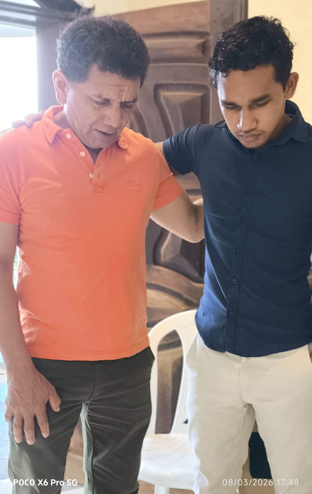
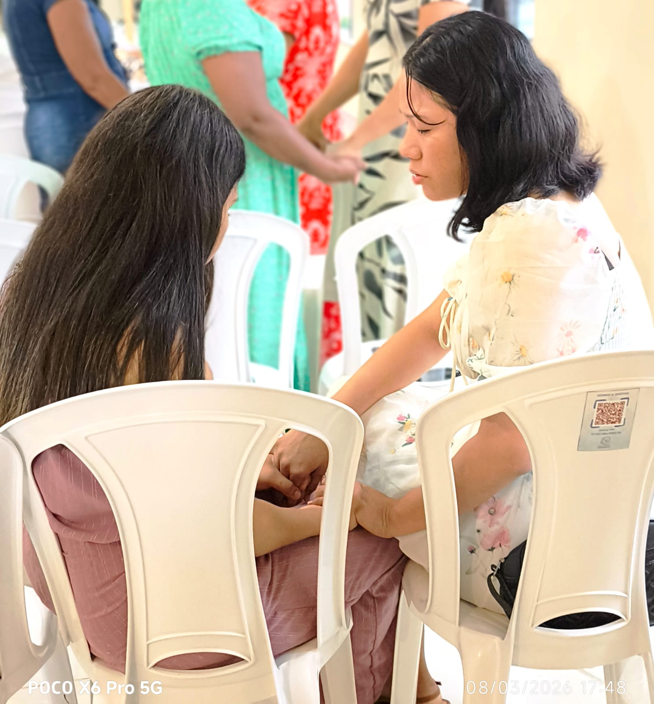

Um ministério dedicado a fortalecer a fé, promover o discipulado e edificar mulheres com o propósito de servir ao Reino com excelência e amor.
Existimos para glorificar a Deus através da união feminina, buscando a maturidade espiritual e o serviço comunitário. Acreditamos que cada mulher possui um chamado único e precioso, desenhado pelo Criador para impactar sua família, igreja e sociedade.
Estudo bíblico profundo e devocionais que sustentam a jornada diária com Cristo.
Espaço seguro para compartilhar, crescer e apoiar umas às outras em amor fraternal.
Mãos estendidas para servir ao próximo e cumprir o Ide de Jesus Cristo.
A estrutura que sustenta nossas atividades e direciona nosso crescimento como ministério.

Promovemos mentoria entre gerações, onde a experiência e o vigor se encontram para a glória de Deus.
Saber mais arrow_forward
Momentos de lazer, oração e compartilhamento que fortalecem a unidade do corpo de Cristo.
Saber mais arrow_forward
Cursos e grupos de estudo sistemático da Bíblia aplicados aos desafios da mulher contemporânea.
Saber mais arrow_forwardFique por dentro das nossas atividades e agende-se para crescer conosco. Nossos eventos são abertos a todas as mulheres que desejam conhecer a Cristo.
Sábado às 16:00 • Auditório Principal
Sexta às 19:30 • Espaço Kids
Fim de Semana • Estância Águas Vivas

Vislumbres de nossa vida em comunidade e adoração.

Em breve, compartilharemos aqui relatos reais de mulheres da igreja sobre essa caminhada de fé e comunhão.
Não importa em qual fase da vida você esteja, há um lugar especial para você em nosso ministério. Vamos crescer juntas na graça e no conhecimento do Senhor.
Próximo encontro: Sábado, às 16:00